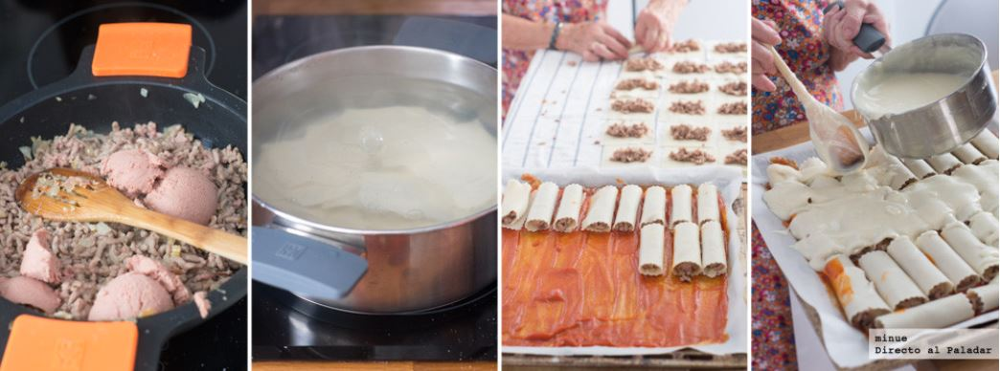

Canelones de la abuela
Cuando mi abuela pasa unos días en casa, me gusta aprovechar para seducirla y que prepare conmigo alguno de sus platos estrella. Otros años os he contado su receta de fabes con almejas, y en esta ocasión os voy a deleitar con la receta de canelones de mi abuela.
En esencia, se trata de una receta de canelones de carne gratinados muy parecida a la normal, pero hay un par de detalles que hacen esta receta especial, única y deliciosa, además de que mi abuela la prepara con mucho amor, que eso no hay tienda delicatessen que lo venda.
Preparación de la receta
Empezamos picando la cebolla y el ajo y poniéndolos a pochar en una sartén. Luego incorporamos la carne picada y, cuando se haya dorado, añadimos el paté, removiendo bien hasta que se integre. Retiramos del fuego y reservamos.
Por otro lado, ponemos a cocer las láminas de pasta en abundante agua salada hirviendo, removiendo con frecuencia para que no se peguen. Tras 10 minutos (o lo que indique el envase), las escurrimos con agua fría y las extendemos rápidamente sobre un paño de cocina.
Ahora llega el momento de rellenar los canelones con la carne picada. Conviene no poner demasiada cantidad para que cierren bien, pero la suficiente para que no quede escaso. Para que queden más jugosos, mi abuela cubre la bandeja del horno con un papel de hornear untado con tomate frito.
El penúltimo paso es preparar la bechamel. En un cazo, derretimos los 100g de mantequilla, luego incorporamos las cuatro cucharadas colmadas de harina y removemos bien. Finalmente, vamos incorporando la leche sin dejar de remover, hasta que quede una bechamel cremosa, sin grumos, y un poco más líquida que la que se usa para las croquetas
Ahora ya solo queda repartir la bechamel por encima de los canelones, colocar el queso rallado y gratinar en la parte alta del horno a máxima temperatura durante unos 15 minutos, hasta que quede bien dorado.
